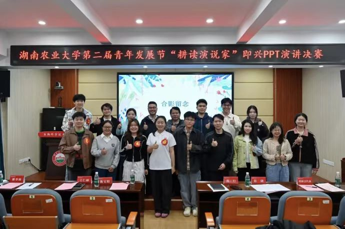
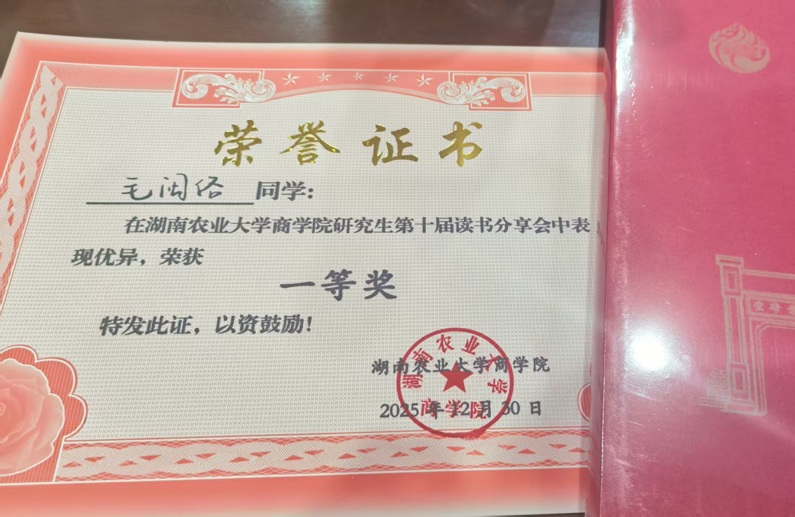
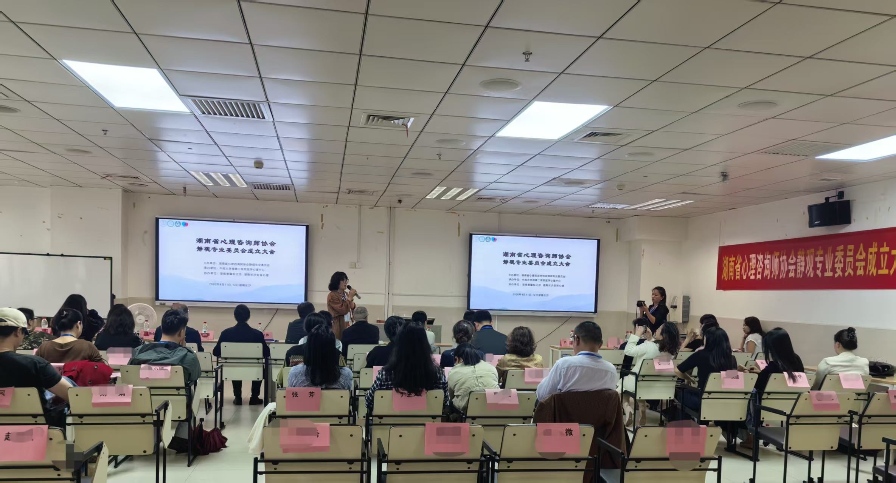

01 / 03MAKE IT UNDERSTANDABLE
让信息
被看见。
我喜欢把零散的内容组织成有节奏的叙述，让表达既准确，也保留一点温度和个人判断。


01 / 03MAKE IT UNDERSTANDABLE
我喜欢把零散的内容组织成有节奏的叙述，让表达既准确，也保留一点温度和个人判断。

02 / 03FIND THE STRUCTURE
当信息有了顺序，观点才有空间被看见。清晰不是删掉细节，而是让重点自然地浮现出来。

03 / 03INPUT / LECTURES
参加各类讲座，接触不同的观点、信息和表达方式，再把听见的内容整理成自己的理解。
A FEW NOTES
先找到信息之间的关系。
让观点按照自然的顺序出现。
把表达交给真实的人来理解。